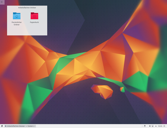
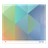

Plasma
Dieser Artikel wurde für die folgenden Ubuntu-Versionen getestet:
Ubuntu 16.04 Xenial Xerus
Ubuntu 14.04 Trusty Tahr
|  |
| Plasma unter Kubuntu 16.04 |
Plasma  ist die Desktop-Umgebung der KDE Community. Diese wurde im Rahmen von KDE SC 4 teilweise neu entwickelt und beinhaltet einige neue Fähigkeiten und innovative Konzepte. Die Anwendungen sind so konzipiert, dass sie sehr flexibel eingesetzt werden können. So findet die Software beispielsweise auch im Musikplayer Amarok Verwendung. Mit Plasma 5 wurden wesentliche Konzepte aus Plasma 4 beibehalten, der Desktop jedoch auf moderne Technologien wie z.B. Qt 5 portiert.
ist die Desktop-Umgebung der KDE Community. Diese wurde im Rahmen von KDE SC 4 teilweise neu entwickelt und beinhaltet einige neue Fähigkeiten und innovative Konzepte. Die Anwendungen sind so konzipiert, dass sie sehr flexibel eingesetzt werden können. So findet die Software beispielsweise auch im Musikplayer Amarok Verwendung. Mit Plasma 5 wurden wesentliche Konzepte aus Plasma 4 beibehalten, der Desktop jedoch auf moderne Technologien wie z.B. Qt 5 portiert.
Die Desktop-Shell ist modular aufgebaut, bestehend aus Miniprogrammen (Widgets oder auch Applets). Eine Besonderheit ist hierbei, dass es manche Miniprogramme gibt, welche weitere Miniprogramme aufnehmen können. Zum Beispiel können die Arbeitsfläche und die Kontrollleiste Miniprogramme aufnehmen. Auf der Arbeitsfläche können die Miniprogramme frei bewegt, skaliert und rotiert werden. In der Kontrollleiste wird die Größe durch diese bestimmt. Eine weitere Stärke dieser Modularität ist, dass auch das Verhalten und Aussehen der Miniprogramme bestimmt werden kann. So wird z.B. in der Kontrollleiste nur ein Icon angezeigt, welches durch einen Klick das eigentliche Miniprogramm öffnet. Auf der Arbeitsfläche wird jedoch direkt das Miniprogramm ohne Symbol angezeigt.
Installation¶
Folgendes Paket muss installiert werden:
kubuntu-desktop (seit Kubuntu 14.04 in universe)
 mit apturl
mit apturl
Paketliste zum Kopieren:
sudo apt-get install kubuntu-desktop
sudo aptitude install kubuntu-desktop
Die Installation aus einem anderen Ubuntu-Derivat heraus kann aber zu Problemen führen. Eine Neuinstallation mittels der Kubuntu-Installationsmedien ist unter Kubuntu Installation beschrieben.
Unterartikel¶
Nachfolgend ist eine Übersicht aller Artikel aufgeführt, die sich mit der Desktop-Oberfläche Plasma befassen. Diese sollen dabei einen Einblick in die Bedienung und Konfiguration von Plasma liefern.
| Einführung in KDE | |
KDE Grundlagen | Eine knappe Einführung der wichtigsten Grundlagen von KDE Plasma |
 KDE Softwareverwaltung | KDE Plasma beinhaltet eine Sammlung von Programmen zur Installation neuer Programme und Aktualisierung der installierten Pakete. |
KDE Komponenten | Die KDE Produkte sind zur Zeit in drei Hautbereiche aufgeteilt. Der Desktop Plasma, die Programmsammlung Applications und das zugrunde liegende Framework. Hinzu kommen assoziierte Drittprogramme. |

| Plasma und seine Komponenten | |
Arbeitsfläche | Der Plasma Desktop stellt den Hintergrund und auf der Arbeitsfläche können weitere Miniprogramme abgelegt werden. |
|  Kontrollleiste | Auch die Kontrollleiste gehört zu Plasma. Wie in der Arbeitsfläche können weitere Miniprogramme in der Kontrollleiste platziert werden. |
Miniprogramme | Wie bereits oben erwähnt sind Miniprogramme ein zentraler Bestandteil des Plasma Desktops. Es gibt bereits eine größere Auswahl von direkt mitinstallierten Miniprogrammen und es stehen weitere in zusätzlichen Paketen zur Auswahl. |
Aktivitäten | Aktivitäten stellen vordefinierte Arbeitsumgebungen dar, in denen Programme, Dokumente und Dateipfade hinterlegt sind. |
KWin | KWin ist der Fenstermanager der KDE und somit eine der zentralen Anwendungen von KDE Plasma. KWin verwaltet alle Fenster und Arbeitsflächen inklusive der zugehörigen Tastenkombinationen. Desktopeffekte sind bei KDE Plasma direkt im Fenstermanager integriert. |
 SDDM | SDDM (Simple Desktop Display Manager) ist der unter KDE Plasma 5 bevorzugte Displaymanager und begegnet dem Anwender meist in Form des Loginbildschirms. Er ersetzt ab Kubuntu 15.04 den Displaymanager LightDM. |
Systemeinstellungen | KDE verfolgt den grundlegenden Ansatz dem Anwender möglichst viele Einstellungsmöglichkeiten zu bieten, um eine individuelle Konfiguration zu ermöglichen. KDE Plasma besitzt zur Konfiguration des Systems standardmäßig ein einfaches Programm, dass alle Optionen beinhaltet. |
Links¶
Extern¶
Offizielle KDE Homepage
mit Plasma-Website. Offizielle Plasma Webseite
Diese ehemalige Plasma-Website ist offline.
- Erstellt mit Inyoka
-
 2004 – 2017 ubuntuusers.de • Einige Rechte vorbehalten
2004 – 2017 ubuntuusers.de • Einige Rechte vorbehalten
Lizenz • Kontakt • Datenschutz • Impressum • Serverstatus -
Serverhousing gespendet von